GolFinance GolFinance 是一个以 NFT 足球为主题的 DeFi 生态系统，其使命是创建一个一体化解决方案，以最大限度地提高用户收益，同时提供安全、快速和低 gas 费用的体验。 我们的目标
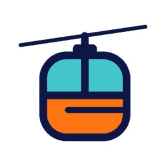 Gondola Finance Gondola 是 Saddle 的一个分支，但受到 Avalanche 的高吞吐量和亚秒级终结性的支持。 利用 StableSwap 算法，我们将连接 Avalanche 上的任何资产，以解决由于多个桥梁造成的碎片化流动性问题。6
Gragas Finance Gragas Finance 是一个收益农业平台，专注于在币安智能链上提供最佳的自动化复利操作。 ***突出特点： 支持 PancakeSwap 的新 LP（版本 2） 低排放率和减排 +混合燃烧机制：
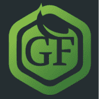 GrassLand Finance $WILD 和 $YARD 功能 GrassLand Finance 是 Polygon 网络上的一种渐进式分层收益农业协议，最终旨在引入创造性功能（如燃烧金库和委托农业系统），使过去的层保持相关性，而不仅仅是用
Gratitude Farm Gratitude Farm 是一个致力于感谢我们社区的项目。 除了将被销毁的最大部分外，所有 3% 的存款费用都将用于流动性。 我们还对自动转换为 LP 代币的感恩代币征收 4% 的交易
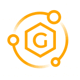 Gravity Finance Gravity Finance 是部署在 Polygon Network 上的 DeFi 平台，目前提供以下功能： 交换交换 农场 产量优化保险库 Launchpad（代币销售） 在不久的将来，我们也期待发布： 自动化和
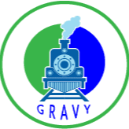 GRAVY GRAVY DeFi 项目是 DeFi 领域最具创新性的项目。 GRAVY 是一种在 EOS 主网上实施的高频交易 (HFT) 套利策略，用于挖掘盈利交易。为了让 GRAVY 挖掘 EOS 主网以获取套利机会，它使用 CPU 资
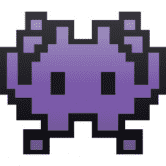 Invader Finance 0xBTC 入侵了 Matic 网络！！ 通过在去中心化交易所 SwapMatic.io 上提供流动性，在 Matic 网络上赚取 ALIEN 代币！ Chevron Finance 自豪地为布里斯班和更广泛的澳大利亚的人们提供基于灵活性和透明
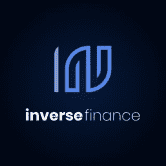 Inverse finance Inverse.finance 是一套无需许可的去中心化金融工具，由运行在以太坊区块链上的去中心化自治组织 Inverse DAO 管理。 Inverse.finance 的主要产品是 Anchor、DOLA 和 DCA Vaults 我们是澳大利
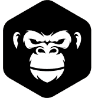 IOT APE IOT Ape 是新 IoTeX 链上的自动做市商和收益农场。 IOTX 是一种以太坊代币，为 IoTeX 提供动力，IoTeX 是一个旨在连接物联网设备（如相机和传感器）和去中心化应用程
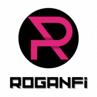 RoganFi Cronos Chain RoganFi 核心价值观上的高产农场和矿池是：创新和长期愿景，安全和社区驱动 Cronos 链上的高产农场和矿池 Cronos 是與 Crypto.org Chain 並行的 EVM 鏈。其主要目的是讓開發者可以快速
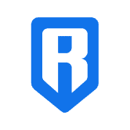 Ronin Bridge 在以太坊和 Ronin 网络之间转移您的资产。 Sky Mavis 的 Ronin 侧链钱包 Ronin 钱包是您前往新数字国家的登机牌。 此扩展允许用户玩在 Ronin 上运行的 Axie Infinity 和其他去中心化应用程序，
RottenSwap Rotten Sushi 代币没有预先挖掘的开发基金，因此无法进行 Chef Nomi 类型的地毯拉动。 这些矿池旨在通过为 ROT 本身提供流动性来激励农业，而不是为鲸鱼创造一种低风险的方
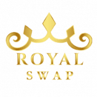 Royalswap Royalswap 是第三代永续耕作机制，可提供可持续且可盈利的产量。 Royalswap DAPP技术分析 Royalswap dApp 是基于协议构建的 DeFi 类别的加密资产。现在，根据用户数量，它在一般 dApp 排
RSK Swap RSK 交换是适用于 RSK 网络的 Uniswap 协议的一个分支。它是用于自动提供流动性的完全去中心化协议。该站点不是 Uniswap 协议的官方站点。一个简单的形式化方程为成千上万
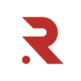 Rubicon Rubicon 正在建立世界秩序手册。我们的使命是开放、加速和民主化全球金融市场。 Rubicon v1 是建立在以太坊领先的第 2 层 (L2) 网络上的订单簿协议。您现在可以在 Rubicon 应用程
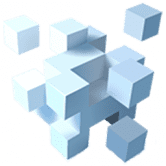 Rubik Farm 基于币安智能链的最实惠和盈利的 Yieldfarm 具有通货紧缩的代币模型，最大供应量为 400,000 RUBIK 代币。 在审查了几种单产农业模型后，我们决定采用低排放率、低供应、分层
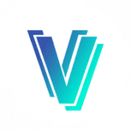 RVL.FINANCE VIVAL (VIV) 是 REVIVAL DeFi 生态系统的治理代币，旨在奖励持有者，同时支持扩展到更广泛的中心化加密领域。 治理代币的采用使 REVIVAL 团队能够创建一种用于中心化交易所的产品
ScareCrow Finance xxxxxxxxxx ScareCrow 是 Fantom 上的一个新的 DeFi 项目，具有通货紧缩的代币模型。 ScareCrow 是一个全新的 DeFi 项目，由经验丰富的开发团队设计为#Fantom 上的第三代通缩收益农场和 A
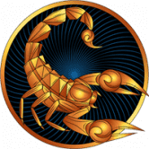 Scorpio DeFi 为什么选择 ScorpioDefi？ 所有本地和非本地池将有 3 小时的收获锁定。这是为了阻止那些在耕作开始后立即抛弃 SCORPIO 的人。 每次转让 SCORPIO 必须缴纳 5% 的
SCREAM SCREAM 是一个基于 Fantom 的借贷协议，适用于 Fantom。 SCREAM 提供完全去中心化、透明和非托管的点对点借贷解决方案。 SCREAM 旨在为更传统的加密资产借贷服务建立高速
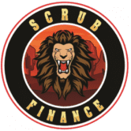 Scrub Finance $LION 算法代币是快速发展的生态系统的支柱，旨在为 cronos 网络和 Savannah 金融协议带来流动性和新用例。该协议的底层机制动态调整 $LION 的供应量，使其价格相对于 $SVN 的价格
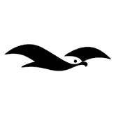 Seagull Swap Seagull Swap，Iotex 网络中的一个新的 Defi 平台。 seagull swap 旨在为 Defi 用户和 IoTex 网络社区提供最安全和持久的单产农业体验。 它是目前为数不多的低排放、高供应的
Sealem 下一代 DeFi+Gamefi 协议 Sealem Lab 正在构建 DeFi+Gamefi 产品的生态系统，这些产品将互操作以最大化回报，同时将用户风险降至最低。 这种关注支持我们选择评估的机会和我们做出的决
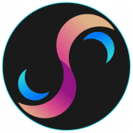 Secret Finance 我们从 Fantom 开始，我们的主要代币 $SECRET 现在可以在 SpookySwap 上使用。 Secret Finance，#Fantom 网络上与 $USDC 挂钩的最智能算法代币！ Secret Finance 的全部重点是建立一个真
Secretum Secretum – 去中心化、加密的消息传递和场外交易 dApp。 Secretum 的使命是让去中心化的消息传递和交易变得无缝。它兼容 DeFi 和元界，被定位为 Web 3.0 时代的首选解决方案
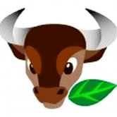 Seeder Finance SEEDER Finance 是最简单的 DeFi 项目，允许在币安智能链上进行杠杆收益农业。它允许用户从整个平台的播种和耕作以及活动中获得最大的回报和利。DeFi 项目，提供从
SeedMoney Finance (Layered) SEEDS 上线后，我们注意到 Harvest Lockup 对每个人来说并不相同，因此可能会导致相互套利倾销，不像 Lavacake 每个人都有相同的锁定，这对每个人来说都更加公平和公平。需要更
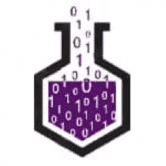 SeleniumSwap 我们通过修改合约解决了以下这些问题：我们如何防止 Rugpull Selenium Swap 是 Binance 智能链上全新的去中心化交易所，被称为第二代收益耕作机制，它允许永久价格上涨，并在发